Recall that a function of one variable, \(f(x)\) has a “critical point” at \(x=x_0\) if the tangent line to the curve at \(x=x_0\) is horizontal or if the derivative does not exist at that point. This critical point can be either a (local) maximum, minimum or horizontal point of inflection or vertical point of inflection. (The first three possibilities are shown in Figure 7.1 below.)
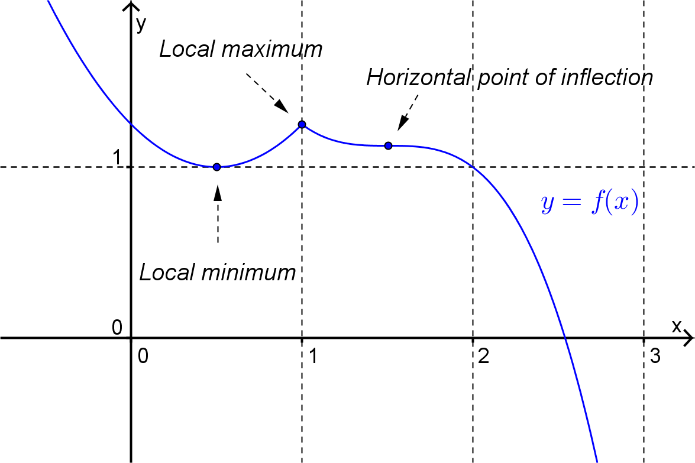
Figure7.1.A plot of \(y=f(x)\) with stationary points labelled.
The idea of critical points can be applied to functions of two variables.
Definition7.2.Critical Point.
The function \(z=f(x,y)\) has a critical point at \((x_0,y_0)\) if the tangent plane to the surface at the point \((x_0,y_0,z_0)\) is horizontal or if one of the directional derivatives does not exist.
As with functions of one variable, critical points of functions of two variables will be one of three types.
If at a critical point \(f(x,y) \leq f(x_0,y_0)\) for all points in some open disk centred on \((x_0,y_0)\) then the critical point is a local maximum.
If at a critical point \(f(x,y) \geq f(x_0,y_0)\) for all points in some open disk centred on \((x_0,y_0)\) then the critical point is a local minimum.
For a smooth function (i.e. a function for which all derivatives exist) if a critical point is not a local maximum or a local minimum then it is a saddle point.
is given below with local maxima and local minima labelled.
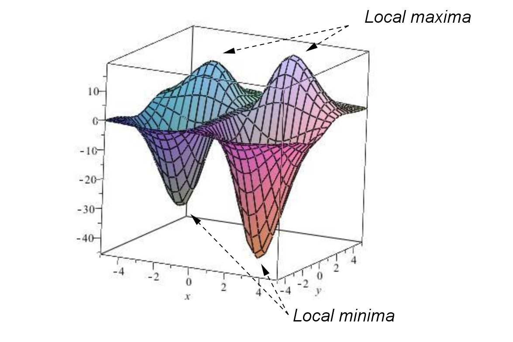
Figure7.4.3D plot of \(f(x,y) = x(5x+2)(3y-2)e^{-\left( \frac{x^2+y^2}{5} \right)}\) with local minima and maxima labelled.
Example7.5.
The graph of the function \(f(x,y) = x^2-y^2\) is given below with a saddle point labelled.
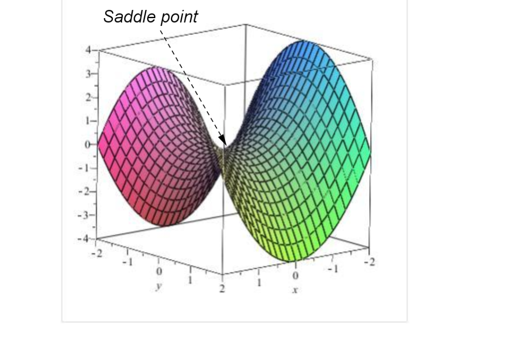
Figure7.6.3D plot of \(f(x,y) = x^2-y^2\) with a saddle point labelled.
For smooth functions we can find the critical points by looking for those points where the tangent plane is horizontal. If the function \(z=f(x,y)\) has a tangent plane at the point \((x_0,y_0,z_0)\) we can determine algebraically that it is horizontal by checking that:
The normal vector for the plane is parallel to the vector \(\langle 0,0,1 \rangle\text{,}\) or
The directional derivative at \((x_0,y_0)\) is zero in every direction, or
The gradient vector at \((x_0,y_0)\) is \(\langle 0,0 \rangle\text{.}\)
These conditions are all equivalent and they lead us to the following theorem.
Theorem7.7.Critical Point.
The point \((x_0,y_0)\) is a critical point of the function \(z = f(x,y)\) if
or, if at least one of these derivatives does not exist.
Note: For the most part, we will assume that the function is smooth, i.e. has derivatives of all orders. In particular a smooth function does not have any discontinuities or cusps. Such critical points will occur for functions of two variables when at least one of the partial derivatives does not exist at the critical point.
Example7.8.
Locate, and determine the nature of, the critical points of the function
\begin{equation*}
z = 2x^3 + (x+1)y^2 + 5x^2\text{.}
\end{equation*}
Answer.
\(\left(0,0\right)\) is a local minimum; \(\left(-\dfrac{5}{3},0\right)\) is a local maximum; \(\left(-1,2\right)\) and \(\left(-1,-2\right)\) are saddle points.
Solution.
To locate the critical points we solve the equations \(z_x = z_y = 0\text{,}\) and check for any points where they do not exist. Since this function is given by a polynomial, the partial derivatives exist. We set them to zero below.
If we have the graph of the function then we can usually determine the nature of these critical points by inspection. From the (computer generated) graph shown below we can see with very careful inspection that the critical point at \((0,0)\) is a local minimum, the critical point at \(\left( -\dfrac{5}{3}, 0 \right)\) is a local maximum and the critical points at \((-1,2)\) and \((-1,-2)\) are saddle points.
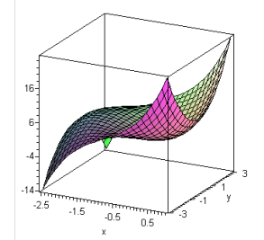
Figure7.9.3D plot of \(z = 2x^3 + (x+1)y^2 + 5x^2\text{.}\)
Sometimes the nature of the critical points is not clear on such graphs or we don’t have access to the graph. Another approach to determining the nature of the critical points is to sketch the level curves for the function.
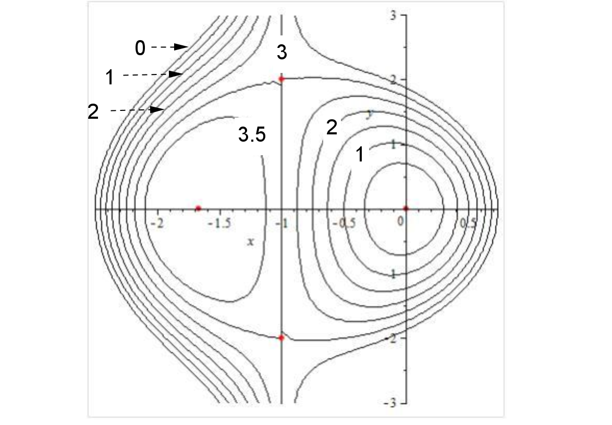
Figure7.10.Sketch of the level curves \(z = k\) for various \(k\text{.}\)
From this diagram we can see that as we move away from the critical points at \(\left(0,0\right)\) in any direction the function value is increasing and hence \(\left(0,0\right)\) is local minimum. Similarly as we move away from the critical point at \(\left(-\dfrac{5}{3},0\right)\) in any direction the function value is decreasing is hence \(\left(-\dfrac{5}{3},0\right)\) is a local maximum. For the critical points at \(\left(-1,2\right)\) and \(\left(-1,-2\right)\) we can move away in some directions and have the function value increase while in other directions the function value will decrease. Hence these critical points are saddle points.
The below Sage cell plots the critical points (in red) of the function
on the 3D surface plot and on the 2D contour plot.
ExercisesExample Tasks
1.
Find the critical points of the function \(f(x,y) = 3x-x^3-2y^2+y^4\) and use the plot of level curves given below to determine the nature of each critical point.
Figure7.11.
Section7.2Second Derivative Test
An algebraic method for determining what type of critical points a function has is given by the following theorem.
Theorem7.12.The Second Derivative Test.
Let the function \(z=f(x,y)\) have continuous 2nd partial derivatives and let \((x_0,y_0)\) be a critical point of the function. Let
If \(D>0\) and \(f_{xx} (x_0,y_0) >0\) then \(f\) has a local minimum at \((x_0,y_0)\text{.}\)
If \(D>0\) and \(f_{xx} (x_0,y_0) < 0\) then \(f\) has a local maximum at \((x_0,y_0)\text{.}\)
If \(D < 0\) then \(f\) has a saddle point at \((x_0,y_0)\text{.}\)
If \(D=0\) then the 2nd derivative test is inconclusive.
Outline of Proof.
For the sake of simplicity assume that the critical point is at the point \((x_0,y_0)=(0,0)\text{.}\) Now using a Taylor expansion for functions of two variables about \((a,b) = (0,0)\) we have (up to the quadratic terms)
From this we can see that if \(f_{xx} > 0\) and \(D = f_{xx} f_{yy} - f_{xy}^2 > 0\) then when \(x\) and \(y\) are varied from \((0,0)\text{,}\)\(f(x,y)\) increases and so \((x_0,y_0) = (0,0)\) will be a local minimum.
Example7.13.
Locate and identify the critical points of the function \(f(x,y) = 2x^3 + (x+1)y^2 + 5x^2\text{.}\)
Answer.
\(\left(0,0\right)\) is a local minimum; \(\left(-\dfrac{5}{3},0\right)\) is a local maximum; \(\left(-1,2\right)\) and \(\left(-1,-2\right)\) are saddle points.
Solution.
We located the critical points of this function in an earlier example. We found that there are 4 critical points at
For this function both partial derivatives are undefined at \((x, y) = (0,0)\) and so this point will be a critical point. However we cannot use the second derivative test to determine the nature of this critical point. In this case we can see from the graph of the function that the critical point at \((x, y) = (0,0)\) is a local maximum.
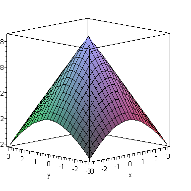
Figure7.15.
ExercisesExample Tasks
1.
Locate and identify the critical points of the function \(z=3x-x^3-2y^2+y^4\text{.}\)
2.
Locate and identify the critical points of the function \(z=\exp \left(xy-\frac{2}{3}x^3 - \frac{2}{3}y^3 \right)\text{.}\)
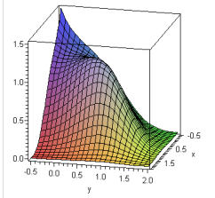
Figure7.16.
Section7.3Global Extrema
Definition7.17.Global Extrema.
Consider the function of two variables \(f(x,y)\) on the domain D.
If there exists some point \((x_0,y_0)\) in \(D\) such that \(f(x,y) \leq f(x_0,y_0)\) for all points \((x,y)\) in \(D\) then the function has a global maximum at \((x_0,y_0)\text{.}\)
Similarly, if there exists some point \((x_0,y_0)\) in \(D\) such that \(f(x,y) \geq f(x_0,y_0)\) for all points \((x,y)\) in \(D\) then the function has a global minimum at \((x_0,y_0)\text{.}\)
over the domain \(D = \left \{ (x,y): -5 \leq x \leq 5, \, -5 \leq y \leq 5 \right \}\) is shown below.
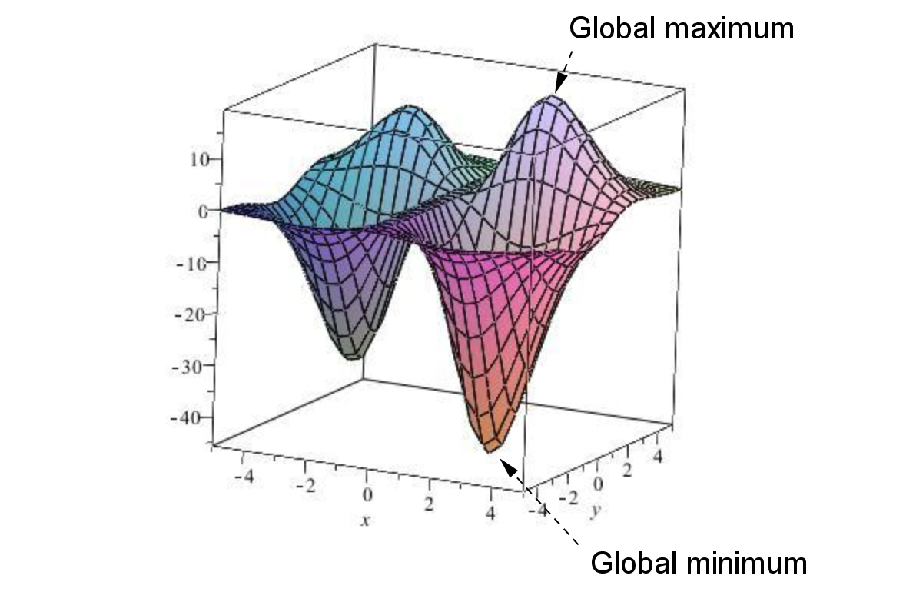
Figure7.19.3D plot of \(f(x,y) = x(5x+2)(3y-2)e^{-\left(\frac{x^2+y^2}{5} \right)}\) with global maximum and minimum labelled.
Before discussing global extrema for functions of two variables, recall the situation for a function of one variable \(y=f(x)\text{.}\) If \(f(x)\) is continuous on the closed interval \(I=[a,b]\) then \(f(x)\) is guaranteed to have both a global maximum and a global minimum on \(I\text{.}\)
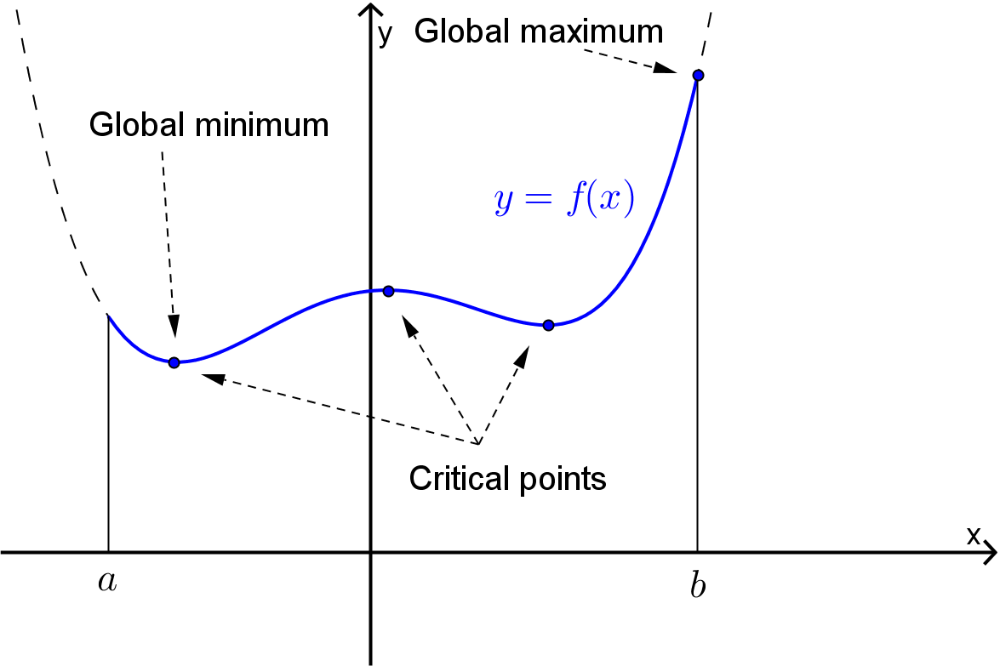
Figure7.20.Plot of \(y=f(x)\) with global maximum and minimum, and critical points labelled.
These global extrema can be found by evaluating \(f(x)\) at
All of the critical points of \(f(x)\) in \(I\text{,}\) and
The endpoints of \(L\text{.}\)
The procedure for finding the global extrema of functions of two variables is very similar and is based on the following theorem.
Theorem7.21.Extreme Value Theorem.
If \(f(x,y)\) is a continuous function on the closed and bounded domain \(D \subset \mathbb{R}^2\) then \(f(x,y)\) has both a global maximum and a global minimum on \(D\text{.}\)
Note that a closed region, \(D \subset \mathbb{R}^2\text{,}\) is a region in the plane that contains its boundary. For example in the diagram below Region \(D_1\) would be a closed region whereas Region \(D_2\) is not closed.
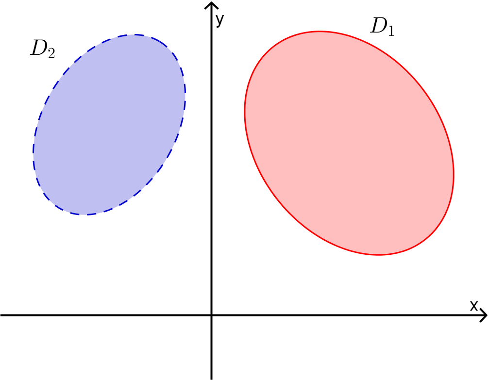
Figure7.22.Example of a region \(D_1\) which is closed, and a region \(D_2\) which is not closed.
A bounded region, \(D \subset \mathbb{R}^2\text{,}\) is a region in the plane that doesn’t extend to infinity in any direction. For example in the diagram below Region \(D_1\) would be a bounded region whereas Region \(D_2\) is not bounded.
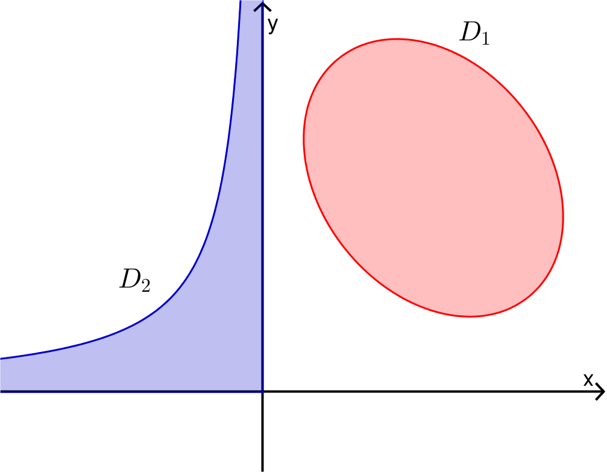
Figure7.23.Example of a region \(D_1\) which is bounded, and a region \(D_2\) which is not bounded.
Remark7.24.Locating Global Extrema.
To locate the global extrema of the continuous function \(f(x,y)\) on the closed and bounded domain \(D \subset \mathbb{R}^2\text{:}\)
Find all of the critical points in the interior of \(D\text{;}\)
Find the maximum and minimum values of \(f(x,y)\) on the boundary of \(D\text{;}\)
Evaluate \(f(x,y)\) at each of the above points and compare.
Example7.25.
The below Sage cell plots the global maximum and global minimum (shown in red) of the surface
on the disc \(D=\{(x,y)\in\mathbb{R}^2\big\vert x^2+y^2\leq 4\}\) (shown in green).
Example7.26.
Find the global extrema of the function \(z(x,y) = x^2 + 2xy + 3y^2\) on the closed triangular region \(D\) with vertices \((-1,1)\text{,}\)\((2,1)\) and \((-1,-2)\text{.}\)
Answer.
Global maximum: \(17\) at \((x,y) = (-1,2)\)
Global minimum: \(0\) at \((x,y)=(0,0)\text{.}\)
Solution.
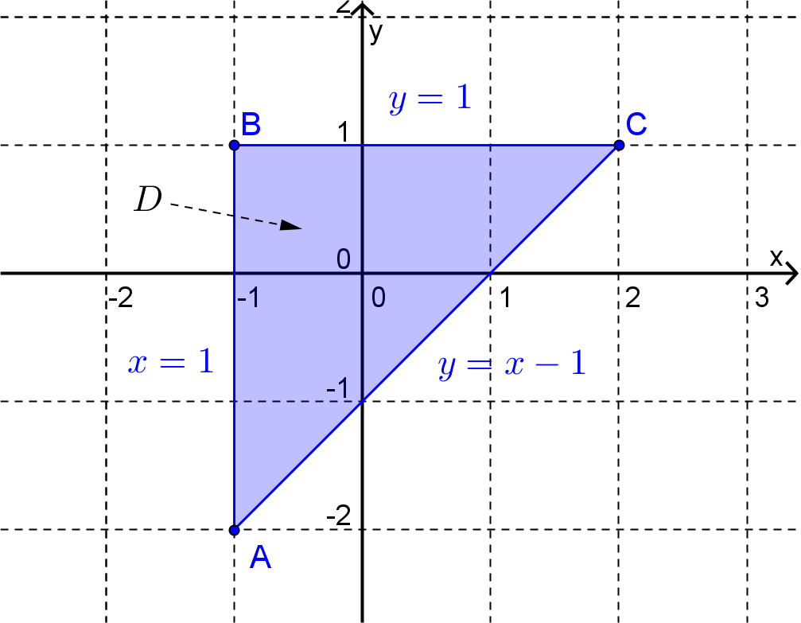
Figure7.27.
Firstly note that \(D\) is a closed and bounded region in the plane and so we can use the method outlined above. So begin by finding the critical points of \(z\text{.}\) Here
Critical points occur when \(z_x = z_y = 0\) and so this function has only one critical point at \((x,y) = (0,0)\text{.}\) This is inside \(D\) and so we evaluate the function at this point, i.e.
To find the maximum and minimum values of the function on the boundary we will have to consider the 3 sides of the triangle separately. Firstly, consider the side of the triangle defined by
\begin{equation*}
y=1, \: -1 \leq x \leq 2\text{.}
\end{equation*}
On this interval we think of \(z\) as a function of \(x\) only, i.e.
Again, using the technique given above for locating the global extrema for a function of one variable (or by looking at the graph) we find that the largest value of \(z\) occurs at \(y=-2\) (giving \(z=17\)) and the smallest value of \(z\) occurs at \(y=1/3\text{,}\) (giving \(z=2/3\)).
Finally on the interval defined by
\begin{equation*}
y=x-1, \: -1 \leq x \leq 2\text{,}
\end{equation*}
we can think of \(z\) as a function of \(x\) only, i.e.
For this function the global maximum is \(17\) at \(x=-1\) and the global minimum is \(1/3\) at \(x=2/3\text{.}\)
On comparing the value of the function \(z(x,y) = x^2 + 2xy + 3y^2\) at each of the global extrema on the sides of the triangle and at the critical point inside the region we conclude that the function has a global maximum of \(17\) at \((x,y) = (-1,2)\) and a global minimum of \(0\) at \((x,y)=(0,0)\text{.}\)
ExercisesExample Tasks
1.
Find the global extrema of \(z=2x^2 + x +y^2 - 2\) on \(D = \left \{ (x,y): x^2+y^2 \leq 4 \right \}\text{.}\)
2.
Find the global extrema of \(R(x,y) = x \sqrt{8-x^2-y^2}\) on \(D = \left \{ (x,y): x^2+y^2 \leq 8 \right \}\text{.}\)